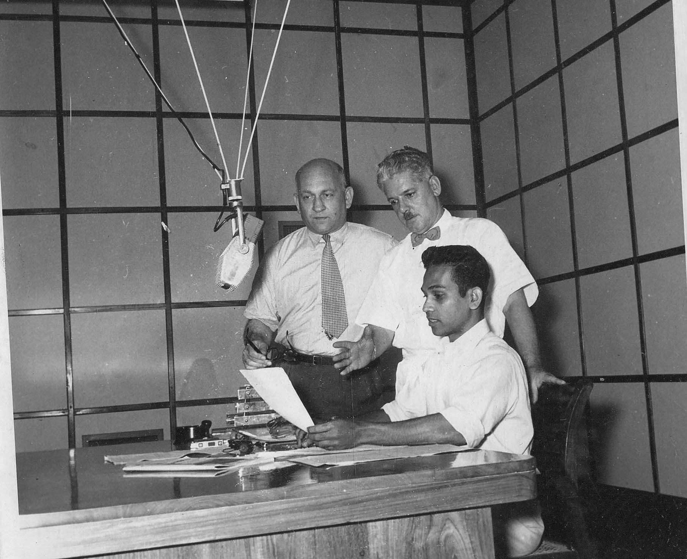

Percy Henry Bartholomeusz
1927-1984
The man who taught us a true work ethic but gone too soon
Percy working at Radio Ceylon at 1956

Percy at Radio Ceylon in 1950's
Here is a timeline of Percy Henry Bartholomeusz life
- 1927 - Born Ceylon, Colombo
- 1937 - Worked in a nightclub as a jazz guitarist to pay for school
- 1951 - Married Grace Hermoine de Zylva his childhood sweetheart
- 1951 - Birth of Fran Beverly Bartholomeusz (died 2014)
- 1953 - Percy worked as a Clerk
- 1955 - Percy started working at Radio Ceylon as a News Broadcaster
- 1956 - Birth of Gayle Pauline Bartholomeusz
- 1958 Percy's extended family emigrated to Australia
- 1962 - Percy left Ceylon and wmigrated to the UK
- 1962 - Birth of their third daughter Janice Rosanne Bartholomeusz
- 1962 -Percy's family followed and arrived in the UK in March 1962.
- 1962 - Birth of Janice Bartholomeusz
- 1963 - Family arrived from Ceylon to London, England
- 1971 - Birth of grandson Wayne Vidal
- 1978 - Birth of grandson Mark Staunton
- 1980 - Birth of grandaughter Bianca Vidal
- 1982 - Invention of pipe
- 1982 - Died at the age of 56
Grand Children
- 1971 - Wayne Cornelius Vidal
- 1978 - Mark Staunton
- 1980 - Bianca Dominique Vidal
Great-Grand Children
- 2008 - Alicia Vidal
- 2011 - Joy Vidal
- 2015 - Xavier Vidal